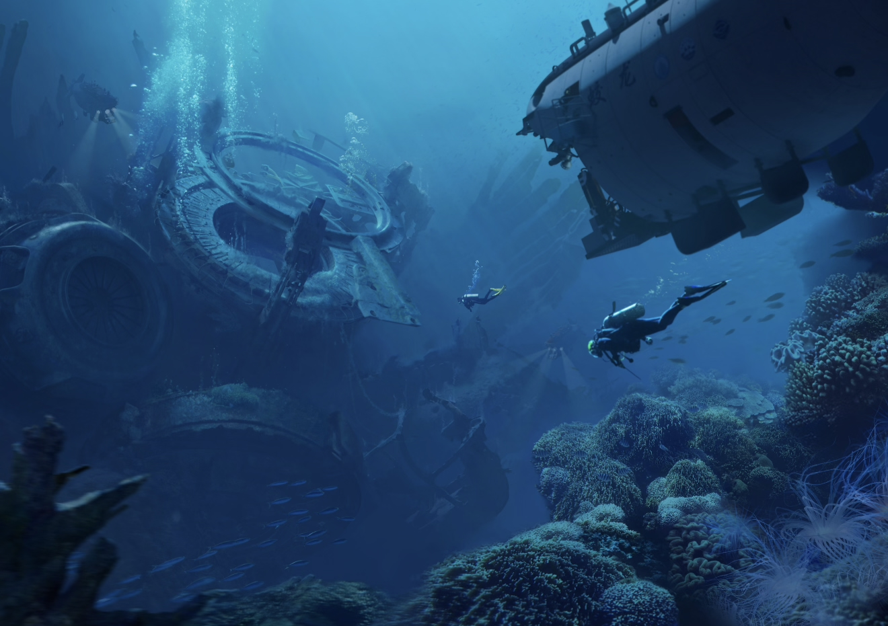

我们为何潜入深海？
Why Do We Dive Into The Deep Sea?
在光影与浮游之间，探索那些隐匿在深海中的生命碎片
创作理念
海洋覆盖了地球表面的71%，而人类对深海的了解甚至少于对月球的认知
深海——最后的边疆
我们创造这个沉浸式体验，是为了让每个人都能触及那片神秘的水下世界。深海是地球上最后未被完全探索的领域，这里隐藏着生命的奇迹和自然的奥秘。
艺术与科学的交融
通过手绘艺术与科学数据的结合，我们让冰冷的海洋知识变得温暖而生动，让科普不再枯燥。
探索未知的渴望
满足人类与生俱来的好奇心，让每个人都能成为虚拟的深海探险家，发现隐藏在黑暗中的生命奇迹。
环境意识的唤醒
通过展示深海的脆弱生态系统，唤起人们对海洋保护的关注，理解每一个生命形式的重要性。
科普使命

深海探索使命
揭示海洋垂直生态
从阳光充足的海面到永恒黑暗的深渊，每一层都孕育着独特的生命形式，适应着极端的环境条件。
展示生物适应性
发光器官、巨大嘴巴、透明身体——深海生物演化出了令人惊叹的生存策略，展现了生命的韧性。
连接科学与公众
将复杂的海洋科学研究转化为易于理解的视觉语言，搭建科学家与公众之间的沟通桥梁。
数字海洋
95%
海洋未被探索
地球上的海洋有95%的区域人类从未亲眼见过
11,000m
最深海沟
马里亚纳海沟的挑战者深渊是已知海洋最深处
90%
生物空间
深海占据了地球上90%的可居住空间
1,000+
新物种
每年在深海中发现超过1000个新物种
"
海洋最深的角落，是人类眼睛所未及，但智慧与想象力可以抵达。
在这片永恒的黑暗中，生命以最奇异的形式绽放，提醒着我们：
未知不是恐惧的源泉，而是奇迹的温床。
每一次下潜，都是向内的旅程——探索外部世界的同时，也在探索内心的深度。
"
或许，我们潜入深海，
不仅仅是为了发现新的物种或景观，
更是为了重新发现我们自己——
在这个蓝色星球上，作为生命网络一部分的定位与责任。